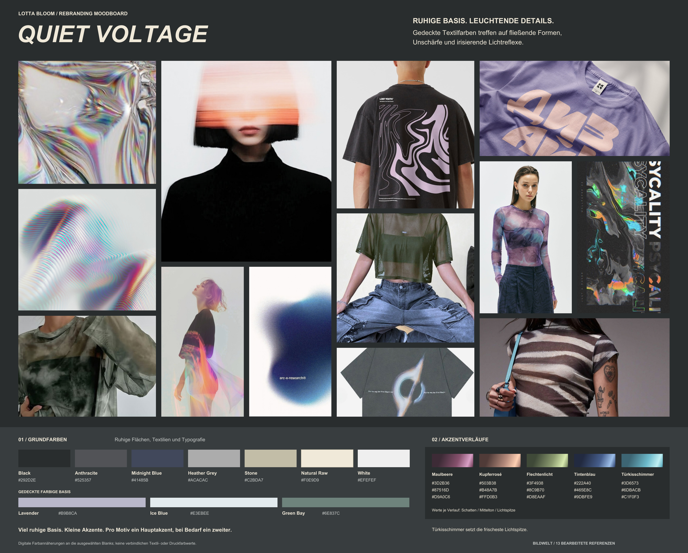

LOTTA BLOOM / REBRANDING MOODBOARD
QUIET VOLTAGE
RUHIGE BASIS. LEUCHTENDE DETAILS.
Gedeckte Textilfarben treffen auf fließende Formen, Unschärfe und irisierende Lichtreflexe.

01 / GRUNDFARBEN
Ruhige Flächen, Textilien und Typografie
Black
#292D2EAnthracite
#525357Midnight Blue
#41485BHeather Grey
#ACACACStone
#C2BDA7Natural Raw
#F0E9D9White
#EFEFEF
GEDECKTE FARBIGE BASIS
Lavender
#B9B8CAIce Blue
#E3EBEEGreen Bay
#6E837C
Viel ruhige Basis. Kleine Akzente. Pro Motiv ein Hauptakzent, bei Bedarf ein zweiter.
Digitale Farbannäherungen an die ausgewählten Blanks; keine verbindlichen Textil- oder Druckfarbwerte.
02 / AKZENTVERLÄUFE
-
Maulbeere
#3D2B36#87516D#D9A0C6
-
Kupferrosé
#503B38#B48A7B#FFD0B3
-
Flechtenlicht
#3F4938#8C9B70#D8EAAF
-
Tintenblau
#222A40#465E8C#9DBFE9
-
Türkisschimmer
#3D6573#6DBACB#C1F0F3
Werte je Verlauf: Schatten / Mittelton / Lichtspitze
Türkisschimmer setzt die frischeste Lichtspitze.